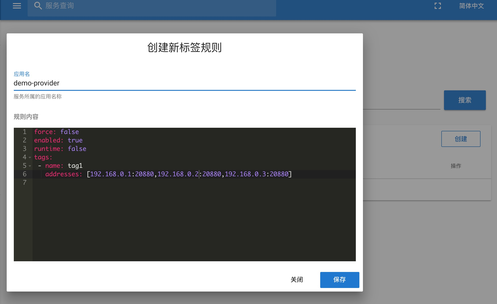
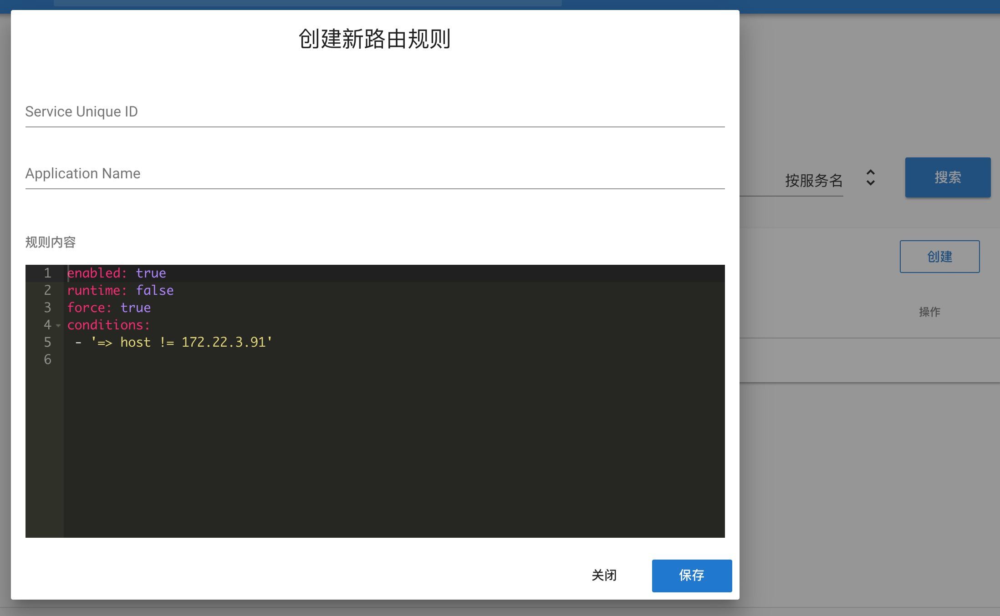
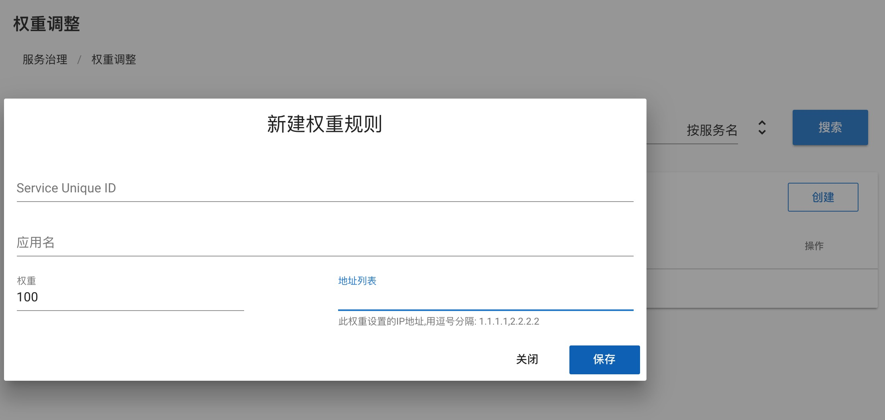
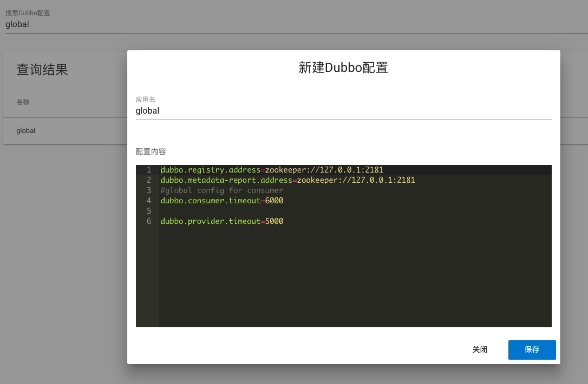
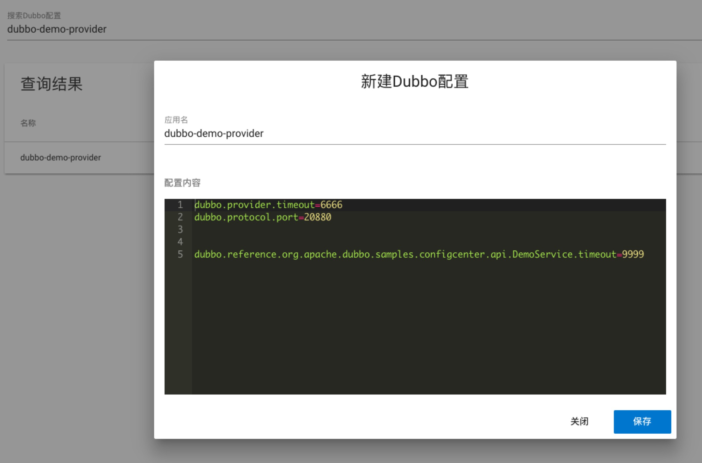
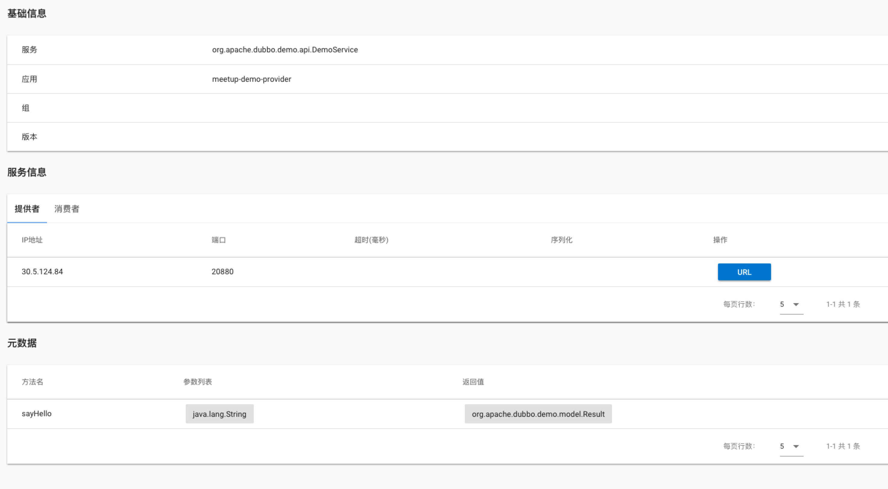
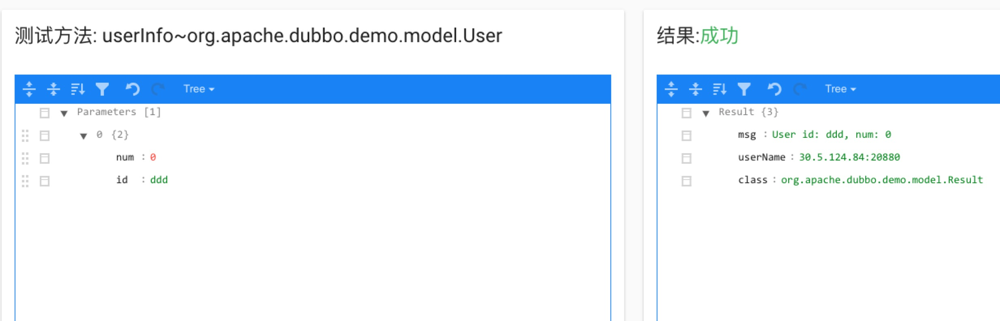

新版Dubbo Admin介绍
Demo地址：http://47.91.207.147/#/service
github: https://github.com/apache/incubator-dubbo-ops
Dubbo Admin之前的版本过于老旧，也长期疏于维护，因此在去年年中的时候，对该项目进行了一次重构，项目结构上的变化如下：
- 将后端框架从webx替换成spring boot
- 前端采用Vue和Vuetify.js作为开发框架
- 移除velocity模板
- 集成swagger，提供api管理功能
当前版本的Dubbo Admin包含了之前版本中的绝大部分功能，包括服务治理，服务查询等，同时支持了Dubbo2.7中服务治理的新特性。
配置规范
由于在Dubbo2.7中，配置中心和注册中心做了分离，并且增加了元数据中心，因此Dubbo Admin的配置方式也做了更新，application.properties中的配置如下:
admin.registry.address=zookeeper://127.0.0.1:2181
admin.config-center=zookeeper://127.0.0.1:2181
admin.metadata-report.address=zookeeper://127.0.0.1:2181
也可以和Dubbo2.7一样，在配置中心指定元数据和注册中心的地址，以zookeeper为例，配置的路径和内容如下:
# /dubbo/config/dubbo/dubbo.properties
dubbo.registry.address=zookeeper://127.0.0.1:2181
dubbo.metadata-report.address=zookeeper://127.0.0.1:2181
配置中心里的地址会覆盖掉本地application.properties的配置
功能介绍
功能上，主要延续了之前版本的功能，包括服务查询和服务治理，2.7版本在服务治理的功能上有了很大的改进，这些改进也大部分都会以Dubbo Admin作为入口来体现。
标签路由
标签路由是Dubbo2.7引入的新功能，配置以应用作为维度，给不同的服务器打上不同名字的标签，配置如下图所示：

调用的时候，客户端可以通过setAttachment的方式，来设置不同的标签名称，比如本例中，setAttachment(tag1)，客户端的选址范围就在如图所示的三台机器中，可以通过这种方式来实现流量隔离，灰度发布等功能。
应用级别的服务治理
在Dubbo2.6及更早版本中，所有的服务治理规则都只针对服务粒度，如果要把某条规则作用到应用粒度上，需要为应用下的所有服务配合相同的规则，变更，删除的时候也需要对应的操作，这样的操作很不友好，因此Dubbo2.7版本中增加了应用粒度的服务治理操作，对于条件路由(包括黑白名单)，动态配置(包括权重，负载均衡)都可以做应用级别的配置：

上图是条件路由的配置，可以按照应用名，服务名两个维度来填写，也可以按照这两个维度来查询。

条件路由，标签路由和动态配置都采用了yaml格式的文本编写，其他的规则配置还是采用了表单的形式。
关于兼容性
Dubbo2.6到Dubbo2.7，服务治理发生了比较大的变化，Dubbo Admin兼容两个版本的用法：
- 对于服务级别的配置，会按照Dubbo2.6(URL)和Dubbo2.7(配置文件)两种格式进行写入，保证Dubbo2.6的客户端能够正确读取，解析规则
- 对于应用级别的配置，包括标签路由，只会按照Dubbo2.7的格式进行写入，因为Dubbo2.6无此功能，不需要做向前兼容。
- Dubbo Admin只会按照Dubbo2.7的格式进行配置读取，因此，所有在Dubbo Admin上做的配置都可以被读到，但是之前遗留的，Dubbo2.6格式的URL无法被读取。
- 对于同一个应用或者服务，每种规则只能够配置一条，否则新的会覆盖旧的。
配置管理
配置管理也是配合Dubbo2.7新增的功能，在Dubbo2.7中，增加了全局和应用维度的配置，
- 全局配置：

全局配置里可以指定注册中心，元数据中心的地址，服务端和客户端的超时时间等，这些配置在全局内生效。除了配置写入，也可以用来查看。如果使用zookeeper作为注册中心和元数据中心，还可以看到配置文件所在位置的目录结构。 - 应用， 服务配置

应用级别的配置可以为应用或者应用内的服务指定配置，在服务维度上，需要区分提供者和消费者。dubbo.reference.{serviceName}表示作为该服务消费者的配置，dubbo.provider.{servcieName}表示作为该服务提供者的配置。优先级服务 > 应用 > 全局。其中注册中心和元数据中心的地址，只能在全局配置中指定，这也是Dubbo2.7中推荐的使用方式。
元数据和服务测试
元数据是Dubbo2.7中新引入的元素，主要的使用场景就在Dubbo Admin中，主要体现在两个地方：
- 服务详情展示：

跟之前版本相比，Dubbo2.7中增加了对服务方法完整签名的记录，因此服务详情中也增加了方法信息的详情，可以看到方法名，方法参数列表以及返回值信息。 - 服务测试：
 更重要的，元数据为服务测试提供了数据基础，可以在页面上调用真实的服务提供者，方便测试，也不需要为了调用服务去搭建一套Dubbo环境以及编写消费端代码。